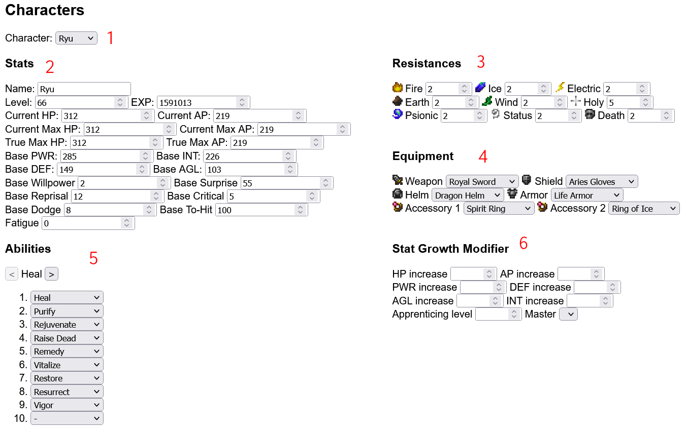
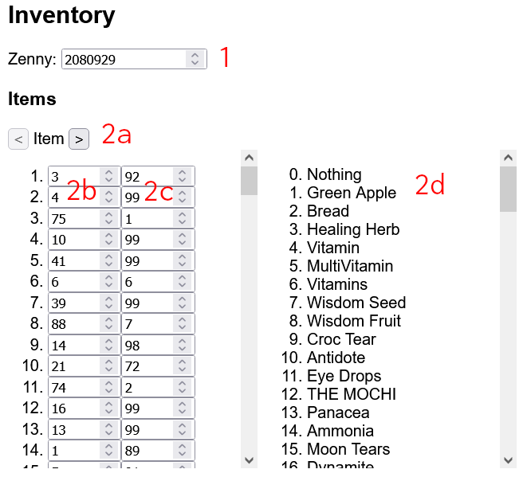
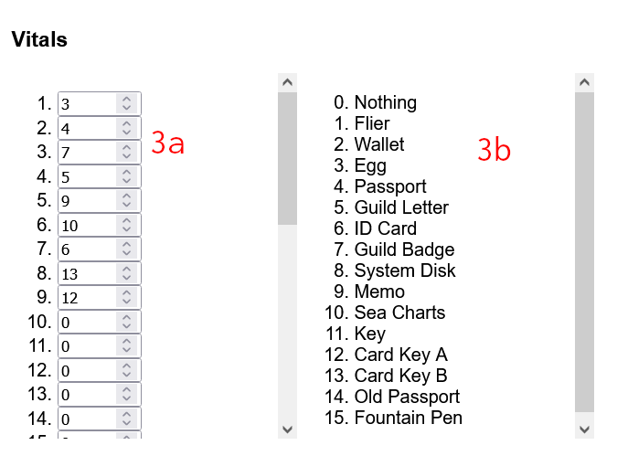
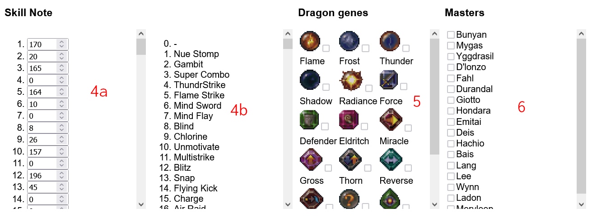
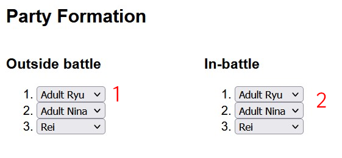

Breath of Fire III Save Editor
Return to editor
About
This tool allows you to edit Breath of Fire III save files inside a PS1 memory card file.
Special credits to ZC_Liu from GameFAQs for his Breath of Fire III Secrets FAQ, which helped a lot with finding the hidden stats,
and to LBokhsa for his post in GameFAQ's Breath of Fire III board for pointing out the save file's checksum.
Some information from the instructions were adapted from ZC_Liu's guide.
Table of Contents
-
Instructions
- Characters
- Inventory
- Party Formation
- Legitimate Use Cases
- Changelog
- Bug Report/Feature Request/Feedback/Contact
Instructions
Characters

- Character picker. Switches between each character in your party which you want to edit.
- Stats editor. Most of the inputs here should be self-explanatory. However the terms
current, true, base, and fatigue might need a bit of explanation:
- Current HP/AP is the amount of HP/AP the character has currently
-
Current max HP/AP is the maximum cap of HP/AP the character can have currently.
Current max HP decreases when the character is KO'd mid-battle and is not revived,
Mandrake is used to heal the character, forgetting to drink water in the
Desert of Death, or using the Disembowel ability. Current max HP recovers to
true max HP when taking a rest anywhere but the camp. As far as I know, nothing
affects current max AP.
-
Base PWR/DEF/INT/AGL is the character's PWR/DEF/INT/AGL before being modified
by equipment/in-battle spells and items. For example, if Ryu's base PWR is currently
320, equipping him with the GKS, Aries Gloves, and Titan Belt will increase his PWR by
180 (GKS) + 10 (Aries Gloves) + 10 (Titan Belt) = 200, thereby setting his total PWR to 520.
While total power is stored in the save file, the reason you can only edit the base
versions of these stats is because the game ignores any changes you make to the total
stats if they don't match the total calculations.
Using the previous example, if I were to set Ryu's total PWR to 650 in the save file, the
game will calculate Ryu's total power from his Base PWR + any modifiers from his equipment
and set that as his base PWR instead. So it's no use to change the total PWR.
-
Fatigue the term ZC_Liu uses to describe this stat, as there isn't any official
term for this stat. It determines how much a character's current max HP is reduced after
being KO'd mid-battle and not revived, using Mandrake, forgetting to drink in the
Desert of Death, or using the Disembowel ability.
Stats have internal limitations built in them to prevent overflow. For example, trying to set the
level above 255 will cause the editor to treat it as 255. In this case, level is a single-byte stat,
and so the largest value it can theoretically have is 255.
- Resistances. Resistances determine how strong a character is against a certain element.
Fire, Ice, Electric, Earth, anad Wind resistance behave like so:
| Lvl |
Effect |
| 0 |
300% as damage to HP |
| 1 |
200% as damage to HP |
| 2 |
100% as damage to HP (Default) |
| 3 |
75% as damage to HP |
| 4 |
50% as damage to HP |
| 5 |
25% as damage to HP |
| 6 |
No damage to HP |
| 7 |
100% absorbed as HP |
Psionic, Status, and Death resistances behave like so:
| Lvl |
Effect |
| 0 |
-200% resistance |
| 1 |
-100% resistance |
| 2 |
0% resistance |
| 3 |
25% resistance |
| 4 |
50% resistance |
| 5 |
75% resistance |
| 6 |
100% resistance |
| 7 |
200% resistance |
The holy element has two effects: resistance to holy attacks, and effectiveness for healing spells:
| Lvl |
Effect (Resistance) |
| 0 |
300% as damage to HP |
| 1 |
200% as damage to HP |
| 2 |
200% as damage to HP |
| 3 |
167% as damage to HP |
| 4 |
133% as damage to HP |
| 5 |
100% as damage to HP (Default) |
| 6 |
50% as damage to HP |
| 7 |
No damage to HP |
| Lvl |
Effect (Effectiveness) |
| 0 |
300% as damage to HP |
| 1 |
200% as damage to HP |
| 2 |
100% as damage to HP |
| 3 |
0% as damage to HP |
| 4 |
50% restores HP |
| 5 |
100% restores HP (Default) |
| 6 |
200% restores HP |
| 7 |
400% restores HP |
- Equipment. Game-restricted limitations can be bypassed here. For example, it is possible
to equip Nina with a LifeArmor as a shield. Do note that there are some equipments which do not
work properly when equipped "illegally", such as the LifeArmor not recovering HP during battle
when equipped as anything but armor.
- Abilities. Use the [<] and [>] buttons to navigate between the ability pages. Be wary when adding
certain abilities. Notably, the ability "Paralyze" crashes the game when used (which makes "Paralyze" a fitting name).
- Stat Growth Modifier. When a character is apprenticed under a master, their stat growth will be
modified according to who their master is. Apprenticing level is the level which the character starts
apprenticing under that master. This is used by the game to calculate when certain skills/items/formations
are unlocked. A master can only be selected if the master has been unlocked. See the section below about
inventory on how to unlock masters.
Inventory



- Zenny. Self-explanatory, the amount of Zenny you have
- Main Inventory Editor. Use the [<] and [>] buttons (2a) to naviagte between inventory pages.
You can edit the "Item", "Weapon", "Armor" and "Option" inventory pages here.
The first column of inputs (2b) represents the ID of each item in the inventory page. The second column
represents the quantity of that item. The scrollable window (2d) is used to look up item IDs.
Note that the scrollable window only displays the appropriate list of item IDs for the current active
inventory page.
For example, in the screenshot, the 3rd slot of the "Item" inventory page contains one Spearfish (ID = 75).
- Vitals. As vital items do not have quantities associated with them, the only column (3a) contains the
item ID of that slot. The scrollable window (3b) is used to look up item IDs.
- Skill Note. The only column of inputs (4a) represents the skill ID of that slot. The scrollable window (4b)
can be used to look up skill IDs.
- Dragon Genes. Toggling a gene's checkbox on means enabling that gene to be used.
- Masters. Toggling a master's checkbox on means enabling your party members to apprentice under that master.
If a master isn't toggled on, you cannot apprentice your party members under that master.
Party Formation

- Formation outside battles. This is your party formation when walking around.
- Formation in battles. This is your party formation when fighting a battle
The option "--" is used to make a party member slot blank.
WARNING: Changing party members can have unintended side effects. Some may even crash the game.
Do not:
-
... remove Ryu from the party unless he is unavailable as a party member at that point in the game.
Although it will not immediately crash the game, a party without Ryu is very glitchy and has the potential
to break the game.
- The character replacing Ryu will not have their sprite rendered properly
- If the character has a field action, using it will crash the game
- Battles will either never load, or will be extremely glitched.
Battles will sometimes load, but the graphics will be extremely glitched. It's kind of a roulette,
some days you might get something that completely doesn't work, and some other you'll get a bare
minimum working.
- (Moderate spoilers ahead, hover to view)
...
add Teepo back to the party after he becomes permanently unavailable. This has more or less the same effects
as removing Ryu from your party. His sprite will be messed up (if you can call it messed up), his field
actions will crash the game, and battles will be glitched. There might be a way to add him back to
your party, as I remember seeing a GameShark code to return Teepo to your party a really long time ago.
However, I am unable to find this code, and as of writing this page, it is still impossible to add
Teepo back without screwing something up really horribly.
I also read on GameFAQs (
source) that you can use Teepo with a party of Child Ryu and
Rei. I am unable to confirm this with my own attempt, which resulted in the same glitch as replacing any other party
member with Teepo.
- ... set all the slots to blank, how will you even play the game like that?
- ... set the first slot to blank
You might be able to:
- Have multiple slots filled with the same character
Legitimate Use Cases
Besides the obvious use cases of cheating your way out of a difficult boss battle or getting a rare item drop, there
are much better use cases of this save editor, and I've compiled a few ways you can make your save file more interesting.
Solo Straight Character Challenge
Before reading this, read the warnings in the instructions for the party members editor.
In a Solo Straight Character Challenge (SSCC) run, you can only use one character, with a few exceptions where your party member selection is
limited during certain sections of the game. Normally, you'd have three in-battle party members, and that makes solo runs a bit tricky.
However, with this editor you can disable the other two in-battle party members, leaving your main character alone to fight the battles
You will have to change your in-battle party members when that character becomes unavailable though.
To add a bit of variation, why not do a duo challenge, where you can only use two characters with exceptions where one of them (or both)
is not accessible.
No Transformation
Can't resist using Accession? Can't resist the power of the Myrmidon? Then just remove Accession from Ryu, and never become a dragon ever
again. You can also one-up the challenge by removing Weretiger from Rei.
No Level Up
After you feel like your party's stats are enough, set everyone's level to 99 and EXP to 4,000,000. Now you can't level up,
you can't get skills/items/formations from masters, you can't get new abilities from levelling up, and you can't get stat increases
from levelling up.
Custom Character Builds
Do you want Nina to be able to use her physical attacks more often? Do you want to make Ryu an offensive spellcaster?
Do you want Garr to be an assist caster? You can do these by changing the character's stat gains modifier, and also their skills.
For example, say you want a mage/spellcaster Ryu. You can try increasing his INT and AP growth, while setting his power and defense
growth to a negative value. You can also give him some elemental spells, and optionally remove his healing spells.
Do remember that this is only a save editing utility. You can't change the power of a spell, and you can't change
what abilities a character receives when they level up. You also have to change the stat growth modifiers again if you
decide to apprentice under a new master.
Bug Report/Feature Request/Feedback/Contact
Please put all bug reports, feature requests and feedback in the Github repository. You may contact me on Discord (red herring#5078).
Back